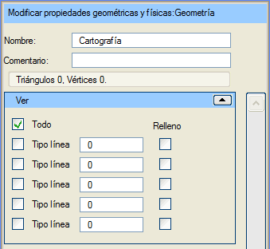
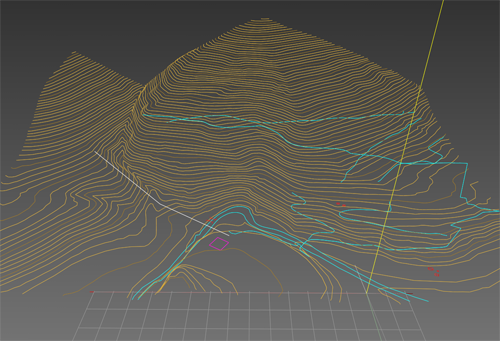

| |
|
Harita
|
|
Genel Bilgiler Varsayılan olarak, yüklenen harita Sanal 3B'de gösterilmez. Bunun nedeni, bir 3B sahnede harita verisinin genellikle sadece "açıklayıcı" bir değere sahip olması, ancak nadiren "fotogerçekçi" olmasıdır. Görüntülemek için sahne ağacındaki ilgili düğümün etkinleştirilmesi gerekir; bu düğüm, genel dal olan Geometri'nin altında yer alır. Haritanın çizimi etkinleştirildiğinde, çizgiler 3B grafik ortamında gösterilir. Yalnızca aktif çizgi tiplerine ve modellere ait olan çizgiler gösterilir. Çizgiler, üç boyutlu bilgilerine göre çizilir. Sadece belirli çizgi tiplerinin görünür olması ve/veya bazılarının dolgulu olması belirtilebilir. Eğer dolgu varsa, dolgu rengi çizginin kendi renginden (tanımlıysa) veya çizgi tipine göre atanan renkten alınır. Seçenekler: İsim: haritayı bir isimle tanımlamayı sağlar. Yorum: bu harita nesnesine açıklayıcı bir yorum eklemeyi sağlar.  Görünür Çizgi Tipleri ve Dolgulu Çizgiler Başlangıçta tüm çizgi tipleri görünürdür, ancak sadece birkaç tip seçilirse, Tümü onay kutusu işaretlenerek tüm aktif haritanın yeniden görülmesi sağlanabilir. Menüdeki her satırda, bir harita çizgi tipinin görünüp görünmeyeceği belirtilebilir. Bu tip, ilgili kutucukta (Çizgi Tipi) belirtilir. Ayrıca Dolgu onay kutusu işaretlenirse, o tipe ait her bir çizgi için, çizginin rengini alan bir üçgenleme oluşturulur.

Resimde, Sanal 3B'de görüntülenen bir harita örneği yer almaktadır. |